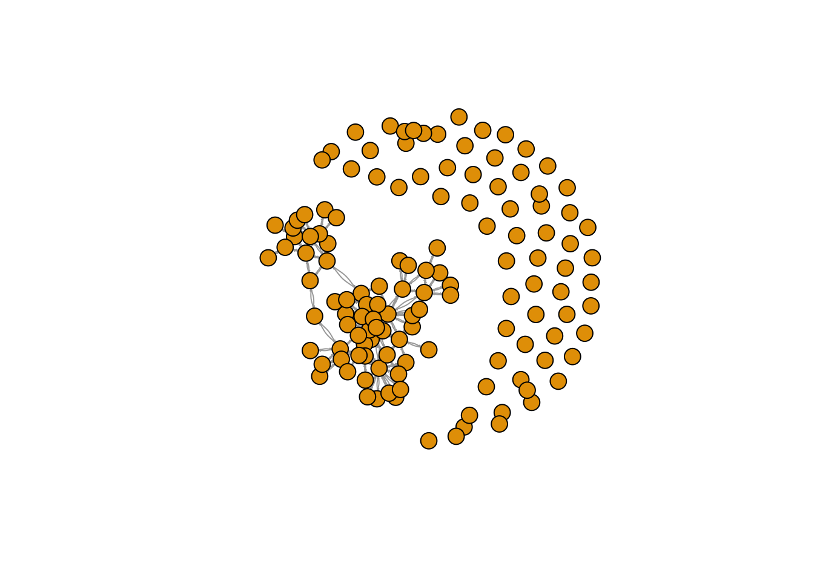
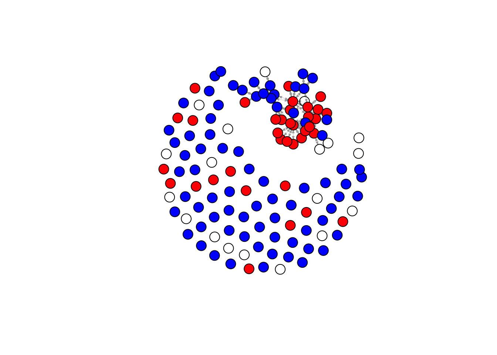

Look at the Data
Now we can use the data, that we have cleaned up a bit, to make a
network-plot, and see what we’re dealing with.
We’ll start easy though, to get a base-level intuitive understanding
of what the data look like – and for that, we’re using only the data of
Radboud’s sociology department in our first wave.
RU Sociology
Graph
#save the output of your function
matrix_ru_soc <- fcolnet(data = scholars,
university = "RU",
discipline = "sociology",
waves = list(c(2015, 2018), c(2019, 2023)),
type = c("first"))
mrs_graph1 <- igraph::graph_from_adjacency_matrix(
matrix_ru_soc$nets[1,,], #for this example I take the first wave of data. (thus I select the array of networks and take the first matrix)
mode = c("directed"),
weighted = NULL,
diag = FALSE,
add.colnames = NULL,
add.rownames = NULL
)
## Warning in igraph::graph_from_adjacency_matrix(matrix_ru_soc$nets[1, , ], : Same attribute for
## columns and rows, row names are ignored
plot(mrs_graph1,
vertex.label= NA,
edge.width = 0.2,
edge.arrow.size =0.2)

Then make it a bit more complicated, and add a new discipline
(political science), and another university.
RU & UvT
Sociology and Political Science Graph
matrix_ru_socpol <- fcolnet(data = scholars,
university = c("RU", "UvT"),
discipline = c("sociology", "political science"),
waves = list(c(2015, 2018), c(2019, 2023)),
type = c("all"))
mrsp <- igraph::graph_from_adjacency_matrix(
matrix_ru_socpol$nets[2,,], #now, I take the second wave
mode = c("directed"),
weighted = NULL,
diag = FALSE,
add.colnames = NULL
)
plot(mrsp,
vertex.label = NA,
vertex.size = .5,
edge.curved = 0.2, # curved edges is always a nice touch
edge.arrow.size = 0.1)
… and see if we can create some differentiations in the plot to see
how different characteristics interact (discipline, university)
#Let us find ego characteristics.
matrix_ru_socpol_df <- matrix_ru_socpol$data
mrusp_df_ego <- do.call(rbind.data.frame, matrix_ru_socpol_df$demographics)
plot(mrsp,
vertex.color = ifelse(mrusp_df_ego$discipline.24 == "sociology", "red", "blue"), #now, I can use actor attributes for plotting.
vertex.label = NA,
edge.width = 0.2,
edge.arrow.size =0.2,
vertex.size = 5)

My Four Departments –
Graph
matrix_my_people <- fcolnet(data = scholars,
university = c("RU", "UU", "UvA", "EUR"),
discipline = "sociology",
waves = list(c(2015, 2019), c(2020, 2024)),
type = c("first"))
graph_my_people <- igraph::graph_from_adjacency_matrix(
matrix_ru_socpol$nets[1,,], #first wave
mode = c("directed"),
weighted = NULL,
diag = FALSE,
add.colnames = NULL
)
plot(mrsp,
vertex.label = NA,
vertex.size = 10,
edge.curved = 0.2,
edge.arrow.size = 0.1)

… and add some ego-level characteristics in this graph!!
matrix_my_people_df <- matrix_my_people$data
df_ego_my_people <- do.call(rbind.data.frame, matrix_my_people_df$demographics)
plot(graph_my_people,
vertex.color = ifelse(df_ego_my_people$Universiteit.24 == "UU", "red", "blue"), #now, I can use actor attributes for plotting.
vertex.label = NA,
edge.width = 0.2,
edge.arrow.size =0.2,
vertex.size = 10)

LS0tCnRpdGxlOiAiVGhlIERhdGFzZXQiCm91dHB1dDogaHRtbF9kb2N1bWVudApkYXRlOiAiMjAyNC0xMC0xNiIKLS0tCmBgYHtyIHNldHVwIHBhY2thZ2VzLCBpbmNsdWRlPUZBTFNFfQpyZXF1aXJlKHRpZHl2ZXJzZSkKcmVxdWlyZShpZ3JhcGgpCnJlcXVpcmUoc2hpbnkpCnJlcXVpcmUocm1kZm9ybWF0cykKcmVxdWlyZShwcmV0dHlkb2MpCnJlcXVpcmUoaHJicnRoZW1lcykKcmVxdWlyZSh0aW50KQpyZXF1aXJlKHR1ZnRlKQpyZXF1aXJlKHBzeWNoKQpsaWJyYXJ5KGRhdGEudGFibGUpICAKbGlicmFyeSh4bWwyKQpsaWJyYXJ5KHJ2ZXN0KQpsaWJyYXJ5KFhNTCkKYGBgCgpgYGB7ciBzZXR1cCBkYXRhLCBpbmNsdWRlPUZBTFNFfQpsb2FkKCIvVXNlcnMvaGFubmFoL0Rlc2t0b3AvU2Vhc29uIDcsIFBhcnQgMS9Tb2NpYWwgTmV0d29ya3MvbGFiam91cm5hbC9zY2hvbGFyc18yMDI0MDkyNC5yZGEiKQpzY2hvbGFycyA8LSB4CnJtKHgpCmBgYAoKIyBUaGUgUGFyYW1ldGVycyBhbmQgVmFyaWFibGVzIChTb21lIG9mIHRoZW0sIGF0IExlYXN0KQoKXAoKKipbZGF0YV0qKjogb3VyIHNjaG9sYXJzIGZpbGVcCioqdW5pdmVyc2l0eSoqOiBDaGFyYWN0ZXIgdmVjdG9yIHdpdGggbmFtZXMgb2YgdW5pdmVyc2l0aWVzLiBXZSBoYXZlIHNldmVyYWwgdW5pdmVyc2l0aWVzIGluIHRoZSBOZXRoZXJsYW5kcy4gU2VlIGFib3ZlIGZvciByZWxldmFudCBuYW1lcy5cCioqZGlzY2lwbGluZSoqOiBDaGFyYWN0ZXIgdmVjdG9yLCBlaXRoZXIgc29jaW9sb2d5IG9yIHBvbGl0aWNhbCBzY2llbmNlIG9yIGJvdGguXAoqKndhdmVzKio6IGEgbGlzdCBvZiBudW1lcmljIHZlY3RvcnMgd2l0aCBzdGFydCBhbmQgZW5kIHllYXIgb2Ygd2F2ZS5cCioqdHlwZToqKlwKKip0aWVzKioKLSAqZmlyc3QqOiBkaXJlY3RlZDogZmlyc3QgYXV0aG9yIHNlbmRpbmcgdG8gb3RoZXJzXAotICpsYXN0KjogZGlyZWN0ZWQ6IGxhc3QgYXV0aG9yIHNlbmRpbmcgdG8gb3RoZXJzXAotICphbGwqOiB1bmRpcmVjdGVkOiB0aWVzIGJldHdlZW4gYWxsIGF1dGhvcnNcCioqT3V0cHV0OioqIC0gYSBsaXN0XAotICpuZXRzKjogYXJyYXkgb2Ygbm9taW5hdGlvbiBuZXR3b3Jrcy5cCi0gKmRhdGEqOiBzYW1wbGUgb2YgZGF0YSAoc2Nob2xhcnMpXAoKYGBge3IgZnVuY3Rpb24gZGF0YXNldCwgaW5jbHVkZSA9IEYsIGVjaG8gPSBGLCBtZXNzYWdlPUZBTFNFLCB3YXJuaW5nPUZ9CiNzbyB0aGlzIGlzIGFsbCB3ZSBhcmUgZG9pbicKZmNvbG5ldCA8LSBmdW5jdGlvbihkYXRhID0gc2Nob2xhcnMsIHVuaXZlcnNpdHkgPSAiUlUiLCBkaXNjaXBsaW5lID0gInNvY2lvbG9neSIsIHdhdmVzID0gbGlzdChjKDIwMTUsCiAgICAyMDE4KSwgYygyMDE5LCAyMDIzKSksIHR5cGUgPSBjKCJmaXJzdCIpKSB7CgogICAgIyBzdGVwIDEKICAgIGRlbW9ncmFwaGljcyA8LSBkby5jYWxsKHJiaW5kLmRhdGEuZnJhbWUsIGRhdGEkZGVtb2dyYXBoaWNzKQogICAgZGVtb2dyYXBoaWNzIDwtIGRlbW9ncmFwaGljcyAlPiUKICAgICAgICBtdXRhdGUoVW5pdmVyc2l0ZWl0MS4yMiA9IHJlcGxhY2UoVW5pdmVyc2l0ZWl0MS4yMiwgaXMubmEoVW5pdmVyc2l0ZWl0MS4yMiksICIiKSwgVW5pdmVyc2l0ZWl0Mi4yMiA9IHJlcGxhY2UoVW5pdmVyc2l0ZWl0Mi4yMiwKICAgICAgICAgICAgaXMubmEoVW5pdmVyc2l0ZWl0Mi4yMiksICIiKSwgVW5pdmVyc2l0ZWl0MS4yNCA9IHJlcGxhY2UoVW5pdmVyc2l0ZWl0MS4yNCwgaXMubmEoVW5pdmVyc2l0ZWl0MS4yNCksCiAgICAgICAgICAgICIiKSwgVW5pdmVyc2l0ZWl0Mi4yNCA9IHJlcGxhY2UoVW5pdmVyc2l0ZWl0Mi4yNCwgaXMubmEoVW5pdmVyc2l0ZWl0Mi4yNCksICIiKSwgZGlzY2lwbGluZS4yMiA9IHJlcGxhY2UoZGlzY2lwbGluZS4yMiwKICAgICAgICAgICAgaXMubmEoZGlzY2lwbGluZS4yMiksICIiKSwgZGlzY2lwbGluZS4yNCA9IHJlcGxhY2UoZGlzY2lwbGluZS4yNCwgaXMubmEoZGlzY2lwbGluZS4yNCksICIiKSkKCiAgICBzYW1wbGUgPC0gd2hpY2goKGRlbW9ncmFwaGljcyRVbml2ZXJzaXRlaXQxLjIyICVpbiUgdW5pdmVyc2l0eSB8IGRlbW9ncmFwaGljcyRVbml2ZXJzaXRlaXQyLjIyICVpbiUKICAgICAgICB1bml2ZXJzaXR5IHwgZGVtb2dyYXBoaWNzJFVuaXZlcnNpdGVpdDEuMjQgJWluJSB1bml2ZXJzaXR5IHwgZGVtb2dyYXBoaWNzJFVuaXZlcnNpdGVpdDIuMjQgJWluJQogICAgICAgIHVuaXZlcnNpdHkpICYgKGRlbW9ncmFwaGljcyRkaXNjaXBsaW5lLjIyICVpbiUgZGlzY2lwbGluZSB8IGRlbW9ncmFwaGljcyRkaXNjaXBsaW5lLjI0ICVpbiUgZGlzY2lwbGluZSkpCgogICAgZGVtb2dyYXBoaWNzX3NvYyA8LSBkZW1vZ3JhcGhpY3Nbc2FtcGxlLCBdCiAgICBzY2hvbGFyc19zZWwgPC0gbGFwcGx5KHNjaG9sYXJzLCAiWyIsIHNhbXBsZSkKCiAgICAjIHN0ZXAgMgogICAgaWRzIDwtIGRlbW9ncmFwaGljc19zb2MkYXVfaWQKICAgIG53YXZlcyA8LSBsZW5ndGgod2F2ZXMpCiAgICBuZXRzIDwtIGFycmF5KDAsIGRpbSA9IGMobndhdmVzLCBsZW5ndGgoaWRzKSwgbGVuZ3RoKGlkcykpLCBkaW1uYW1lcyA9IGxpc3Qod2F2ZSA9IDE6bndhdmVzLCBpZHMsCiAgICAgICAgaWRzKSkKICAgIGRpbW5hbWVzKG5ldHMpCgogICAgIyBzdGVwIDMKICAgIGRmX3dvcmtzIDwtIHRpYmJsZSh3b3Jrc19pZCA9IHVubGlzdChsYXBwbHkoc2Nob2xhcnNfc2VsJHdvcmssIGZ1bmN0aW9uKGwpIGwkaWQpKSwgd29ya3NfYXV0aG9yID0gdW5saXN0KGxhcHBseShzY2hvbGFyc19zZWwkd29yaywKICAgICAgICBmdW5jdGlvbihsKSBsJGF1dGhvciksIHJlY3Vyc2l2ZSA9IEZBTFNFKSwgd29ya3NfeWVhciA9IHVubGlzdChsYXBwbHkoc2Nob2xhcnNfc2VsJHdvcmssIGZ1bmN0aW9uKGwpIGwkcHVibGljYXRpb25feWVhciksCiAgICAgICAgcmVjdXJzaXZlID0gRkFMU0UpKQoKICAgIGRmX3dvcmtzIDwtIGRmX3dvcmtzWyFkdXBsaWNhdGVkKGRmX3dvcmtzKSwgXQoKICAgICMgc3RlcCA0CiAgICBpZiAodHlwZSA9PSAiZmlyc3QiKSB7CiAgICAgICAgZm9yIChqIGluIDE6bndhdmVzKSB7CiAgICAgICAgICAgIGRmX3dvcmtzX3cgPC0gZGZfd29ya3NbZGZfd29ya3Mkd29ya3NfeWVhciA+PSB3YXZlc1tbal1dWzFdICYgZGZfd29ya3Mkd29ya3NfeWVhciA8PSB3YXZlc1tbal1dWzJdLAogICAgICAgICAgICAgICAgXQogICAgICAgICAgICBmb3IgKGkgaW4gMTpucm93KGRmX3dvcmtzX3cpKSB7CiAgICAgICAgICAgICAgICBlZ28gPC0gZGZfd29ya3NfdyR3b3Jrc19hdXRob3JbaV1bWzFdXSRhdV9pZFsxXQogICAgICAgICAgICAgICAgYWx0ZXJzIDwtIGRmX3dvcmtzX3ckd29ya3NfYXV0aG9yW2ldW1sxXV0kYXVfaWRbLTFdCiAgICAgICAgICAgICAgICBpZiAoc3VtKGlkcyAlaW4lIGVnbykgPiAwICYgc3VtKGlkcyAlaW4lIGFsdGVycykgPiAwKSB7CiAgICAgICAgICAgICAgICAgIG5ldHNbaiwgd2hpY2goaWRzICVpbiUgZWdvKSwgd2hpY2goaWRzICVpbiUgYWx0ZXJzKV0gPC0gMQogICAgICAgICAgICAgICAgfQogICAgICAgICAgICB9CiAgICAgICAgfQogICAgfQoKICAgIGlmICh0eXBlID09ICJsYXN0IikgewogICAgICAgIGZvciAoaiBpbiAxOm53YXZlcykgewogICAgICAgICAgICBkZl93b3Jrc193IDwtIGRmX3dvcmtzW2RmX3dvcmtzJHdvcmtzX3llYXIgPj0gd2F2ZXNbW2pdXVsxXSAmIGRmX3dvcmtzJHdvcmtzX3llYXIgPD0gd2F2ZXNbW2pdXVsyXSwKICAgICAgICAgICAgICAgIF0KICAgICAgICAgICAgZm9yIChpIGluIDE6bnJvdyhkZl93b3Jrc193KSkgewogICAgICAgICAgICAgICAgZWdvIDwtIHJldihkZl93b3Jrc193JHdvcmtzX2F1dGhvcltpXVtbMV1dJGF1X2lkKVsxXQogICAgICAgICAgICAgICAgYWx0ZXJzIDwtIHJldihkZl93b3Jrc193JHdvcmtzX2F1dGhvcltpXVtbMV1dJGF1X2lkKVstMV0KICAgICAgICAgICAgICAgIGlmIChzdW0oaWRzICVpbiUgZWdvKSA+IDAgJiBzdW0oaWRzICVpbiUgYWx0ZXJzKSA+IDApIHsKICAgICAgICAgICAgICAgICAgbmV0c1tqLCB3aGljaChpZHMgJWluJSBlZ28pLCB3aGljaChpZHMgJWluJSBhbHRlcnMpXSA8LSAxCiAgICAgICAgICAgICAgICB9CiAgICAgICAgICAgIH0KICAgICAgICB9CiAgICB9CgogICAgaWYgKHR5cGUgPT0gImFsbCIpIHsKICAgICAgICBmb3IgKGogaW4gMTpud2F2ZXMpIHsKICAgICAgICAgICAgZGZfd29ya3NfdyA8LSBkZl93b3Jrc1tkZl93b3JrcyR3b3Jrc195ZWFyID49IHdhdmVzW1tqXV1bMV0gJiBkZl93b3JrcyR3b3Jrc195ZWFyIDw9IHdhdmVzW1tqXV1bMl0sCiAgICAgICAgICAgICAgICBdCiAgICAgICAgICAgIGZvciAoaSBpbiAxOm5yb3coZGZfd29ya3NfdykpIHsKICAgICAgICAgICAgICAgIGVnb3MgPC0gZGZfd29ya3NfdyR3b3Jrc19hdXRob3JbaV1bWzFdXSRhdV9pZAogICAgICAgICAgICAgICAgaWYgKHN1bShpZHMgJWluJSBlZ29zKSA+IDApIHsKICAgICAgICAgICAgICAgICAgbmV0c1tqLCB3aGljaChpZHMgJWluJSBlZ29zKSwgd2hpY2goaWRzICVpbiUgZWdvcyldIDwtIDEKICAgICAgICAgICAgICAgIH0KICAgICAgICAgICAgfQogICAgICAgIH0KICAgIH0KICAgIG91dHB1dCA8LSBsaXN0KCkKICAgIG91dHB1dCRkYXRhIDwtIHNjaG9sYXJzX3NlbAogICAgb3V0cHV0JG5ldHMgPC0gbmV0cwogICAgcmV0dXJuKG91dHB1dCkKfQoKYGBgCgojIExvb2sgYXQgdGhlIERhdGEgCgpOb3cgd2UgY2FuIHVzZSB0aGUgZGF0YSwgdGhhdCB3ZSBoYXZlIGNsZWFuZWQgdXAgYSBiaXQsIHRvIG1ha2UgYSBuZXR3b3JrLXBsb3QsIGFuZCBzZWUgd2hhdCB3ZSdyZSBkZWFsaW5nIHdpdGguXAoKV2UnbGwgc3RhcnQgZWFzeSB0aG91Z2gsIHRvIGdldCBhIGJhc2UtbGV2ZWwgaW50dWl0aXZlIHVuZGVyc3RhbmRpbmcgb2Ygd2hhdCB0aGUgZGF0YSBsb29rIGxpa2UgLS0gYW5kIGZvciB0aGF0LCB3ZSdyZSB1c2luZyBvbmx5IHRoZSBkYXRhIG9mIFJhZGJvdWQncyBzb2Npb2xvZ3kgZGVwYXJ0bWVudCBpbiBvdXIgZmlyc3Qgd2F2ZS4gClwKCiMjIFJVIFNvY2lvbG9neSBHcmFwaCAKYGBge3IgbWF0cml4IDEsIGZpZy5kaW0gPSBjKDgsIDYpfQojc2F2ZSB0aGUgb3V0cHV0IG9mIHlvdXIgZnVuY3Rpb24KbWF0cml4X3J1X3NvYyA8LSBmY29sbmV0KGRhdGEgPSBzY2hvbGFycywgCiAgICAgICAgICAgICAgICB1bml2ZXJzaXR5ID0gIlJVIiwgCiAgICAgICAgICAgICAgICBkaXNjaXBsaW5lID0gInNvY2lvbG9neSIsIAogICAgICAgICAgICAgICAgd2F2ZXMgPSBsaXN0KGMoMjAxNSwgMjAxOCksIGMoMjAxOSwgMjAyMykpLCAKICAgICAgICAgICAgICAgIHR5cGUgPSBjKCJmaXJzdCIpKQoKbXJzX2dyYXBoMSA8LSBpZ3JhcGg6OmdyYXBoX2Zyb21fYWRqYWNlbmN5X21hdHJpeCgKICBtYXRyaXhfcnVfc29jJG5ldHNbMSwsXSwgI2ZvciB0aGlzIGV4YW1wbGUgSSB0YWtlIHRoZSBmaXJzdCB3YXZlIG9mIGRhdGEuICh0aHVzIEkgc2VsZWN0IHRoZSBhcnJheSBvZiBuZXR3b3JrcyBhbmQgdGFrZSB0aGUgZmlyc3QgbWF0cml4KQogIG1vZGUgPSBjKCJkaXJlY3RlZCIpLAogIHdlaWdodGVkID0gTlVMTCwKICBkaWFnID0gRkFMU0UsCiAgYWRkLmNvbG5hbWVzID0gTlVMTCwKICBhZGQucm93bmFtZXMgPSBOVUxMCikKCnBsb3QobXJzX2dyYXBoMSwKICB2ZXJ0ZXgubGFiZWw9IE5BLAogIGVkZ2Uud2lkdGggPSAwLjIsCiAgZWRnZS5hcnJvdy5zaXplID0wLjIpCmBgYAoKVGhlbiBtYWtlIGl0IGEgYml0IG1vcmUgY29tcGxpY2F0ZWQsIGFuZCBhZGQgYSBuZXcgZGlzY2lwbGluZSAocG9saXRpY2FsIHNjaWVuY2UpLCBhbmQgYW5vdGhlciB1bml2ZXJzaXR5LiAKCiMjIFJVICYgVXZUIFNvY2lvbG9neSBhbmQgUG9saXRpY2FsIFNjaWVuY2UgR3JhcGggCgpgYGB7ciwgIGZpZy5kaW0gPSBjKDgsIDYpfQptYXRyaXhfcnVfc29jcG9sIDwtIGZjb2xuZXQoZGF0YSA9IHNjaG9sYXJzLCAKICAgICAgICAgICAgICAgIHVuaXZlcnNpdHkgPSBjKCJSVSIsICJVdlQiKSwgCiAgICAgICAgICAgICAgICBkaXNjaXBsaW5lID0gYygic29jaW9sb2d5IiwgInBvbGl0aWNhbCBzY2llbmNlIiksIAogICAgICAgICAgICAgICAgd2F2ZXMgPSBsaXN0KGMoMjAxNSwgMjAxOCksIGMoMjAxOSwgMjAyMykpLCAKICAgICAgICAgICAgICAgIHR5cGUgPSBjKCJhbGwiKSkKCm1yc3AgPC0gaWdyYXBoOjpncmFwaF9mcm9tX2FkamFjZW5jeV9tYXRyaXgoCiAgbWF0cml4X3J1X3NvY3BvbCRuZXRzWzIsLF0sICNub3csIEkgdGFrZSB0aGUgc2Vjb25kIHdhdmUKICBtb2RlID0gYygiZGlyZWN0ZWQiKSwKICB3ZWlnaHRlZCA9IE5VTEwsCiAgZGlhZyA9IEZBTFNFLAogIGFkZC5jb2xuYW1lcyA9IE5VTEwKKQoKcGxvdChtcnNwLAogICAgIHZlcnRleC5sYWJlbCA9IE5BLAogICAgIHZlcnRleC5zaXplID0gLjUsCiAgICAgZWRnZS5jdXJ2ZWQgPSAwLjIsICMgY3VydmVkIGVkZ2VzIGlzIGFsd2F5cyBhIG5pY2UgdG91Y2gKICAgICBlZGdlLmFycm93LnNpemUgPSAwLjEpCmBgYAoKLi4uIGFuZCBzZWUgaWYgd2UgY2FuIGNyZWF0ZSBzb21lIGRpZmZlcmVudGlhdGlvbnMgaW4gdGhlIHBsb3QgdG8gc2VlIGhvdyBkaWZmZXJlbnQgY2hhcmFjdGVyaXN0aWNzIGludGVyYWN0IChkaXNjaXBsaW5lLCB1bml2ZXJzaXR5KQoKYGBge3Igbm93IHNvbWUgbW9yZSwgIGZpZy5kaW0gPSBjKDgsIDYpfQojTGV0IHVzIGZpbmQgZWdvIGNoYXJhY3RlcmlzdGljcy4gCm1hdHJpeF9ydV9zb2Nwb2xfZGYgPC0gbWF0cml4X3J1X3NvY3BvbCRkYXRhCm1ydXNwX2RmX2VnbyA8LSBkby5jYWxsKHJiaW5kLmRhdGEuZnJhbWUsIG1hdHJpeF9ydV9zb2Nwb2xfZGYkZGVtb2dyYXBoaWNzKQoKcGxvdChtcnNwLAogIHZlcnRleC5jb2xvciA9IGlmZWxzZShtcnVzcF9kZl9lZ28kZGlzY2lwbGluZS4yNCA9PSAic29jaW9sb2d5IiwgInJlZCIsICJibHVlIiksICNub3csIEkgY2FuIHVzZSBhY3RvciBhdHRyaWJ1dGVzIGZvciBwbG90dGluZy4gCiAgdmVydGV4LmxhYmVsID0gTkEsCiAgZWRnZS53aWR0aCA9IDAuMiwKICBlZGdlLmFycm93LnNpemUgPTAuMiwKICB2ZXJ0ZXguc2l6ZSA9IDUpCmBgYAoKIyMgTXkgRm91ciBEZXBhcnRtZW50cyAtLSBHcmFwaAoKYGBge3J9Cm1hdHJpeF9teV9wZW9wbGUgPC0gZmNvbG5ldChkYXRhID0gc2Nob2xhcnMsIAogICAgICAgICAgICAgICAgdW5pdmVyc2l0eSA9IGMoIlJVIiwgIlVVIiwgIlV2QSIsICJFVVIiKSwgCiAgICAgICAgICAgICAgICBkaXNjaXBsaW5lID0gInNvY2lvbG9neSIsCiAgICAgICAgICAgICAgICB3YXZlcyA9IGxpc3QoYygyMDE1LCAyMDE5KSwgYygyMDIwLCAyMDI0KSksIAogICAgICAgICAgICAgICAgdHlwZSA9IGMoImZpcnN0IikpCgpncmFwaF9teV9wZW9wbGUgPC0gaWdyYXBoOjpncmFwaF9mcm9tX2FkamFjZW5jeV9tYXRyaXgoCiAgbWF0cml4X3J1X3NvY3BvbCRuZXRzWzEsLF0sICNmaXJzdCB3YXZlCiAgbW9kZSA9IGMoImRpcmVjdGVkIiksCiAgd2VpZ2h0ZWQgPSBOVUxMLAogIGRpYWcgPSBGQUxTRSwKICBhZGQuY29sbmFtZXMgPSBOVUxMCikKCnBsb3QobXJzcCwKICAgICB2ZXJ0ZXgubGFiZWwgPSBOQSwKICAgICB2ZXJ0ZXguc2l6ZSA9IDEwLAogICAgIGVkZ2UuY3VydmVkID0gMC4yLAogICAgIGVkZ2UuYXJyb3cuc2l6ZSA9IDAuMSkKYGBgCi4uLiBhbmQgYWRkIHNvbWUgZWdvLWxldmVsIGNoYXJhY3RlcmlzdGljcyBpbiB0aGlzIGdyYXBoISEKCmBgYHtyfQptYXRyaXhfbXlfcGVvcGxlX2RmIDwtIG1hdHJpeF9teV9wZW9wbGUkZGF0YQpkZl9lZ29fbXlfcGVvcGxlIDwtIGRvLmNhbGwocmJpbmQuZGF0YS5mcmFtZSwgbWF0cml4X215X3Blb3BsZV9kZiRkZW1vZ3JhcGhpY3MpCgpwbG90KGdyYXBoX215X3Blb3BsZSwKICB2ZXJ0ZXguY29sb3IgPSBpZmVsc2UoZGZfZWdvX215X3Blb3BsZSRVbml2ZXJzaXRlaXQuMjQgPT0gIlVVIiwgInJlZCIsICJibHVlIiksICNub3csIEkgY2FuIHVzZSBhY3RvciBhdHRyaWJ1dGVzIGZvciBwbG90dGluZy4gCiAgdmVydGV4LmxhYmVsID0gTkEsCiAgZWRnZS53aWR0aCA9IDAuMiwKICBlZGdlLmFycm93LnNpemUgPTAuMiwKICB2ZXJ0ZXguc2l6ZSA9IDEwKQoKYGBgCgpgYGB7ciB3cml0ZSBkZiwgaW5jbHVkZSA9IEYsIGVjaG8gPSBGfQojd3JpdGVfcmRzKGRmX2Vnb19teV9wZW9wbGUsICJkZW1vZ3JhcGhpY3NfbXlfcGVvcGxlLnJkcyIpCmBgYAoK